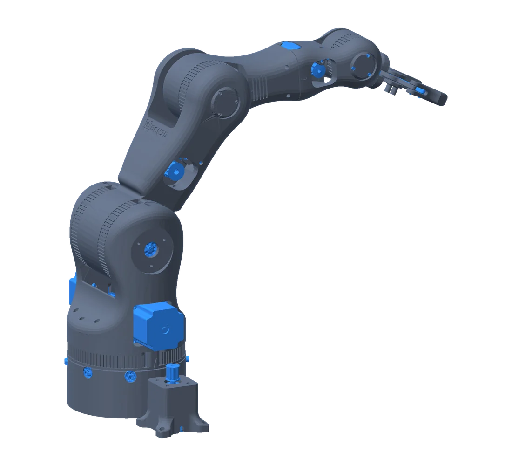
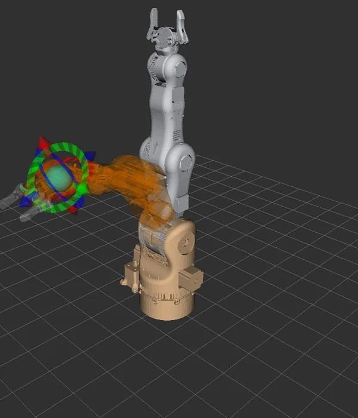
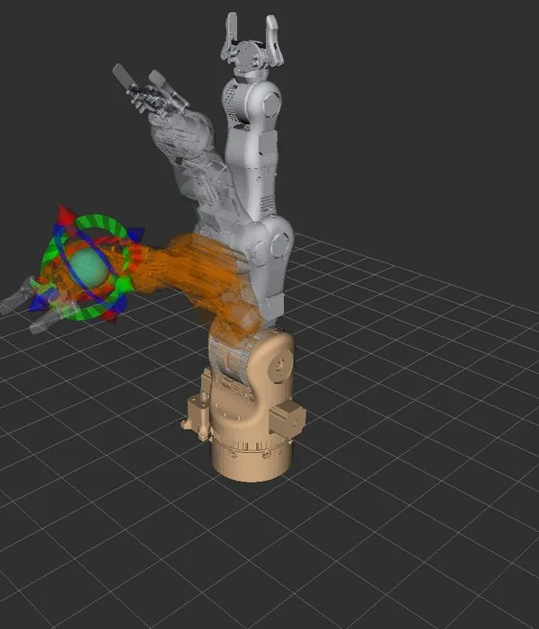
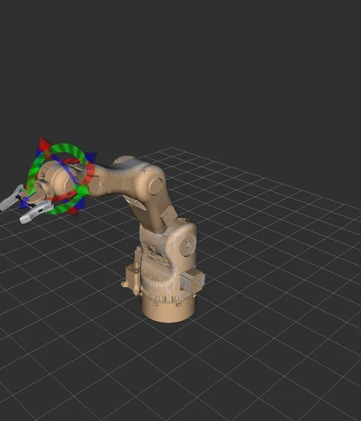
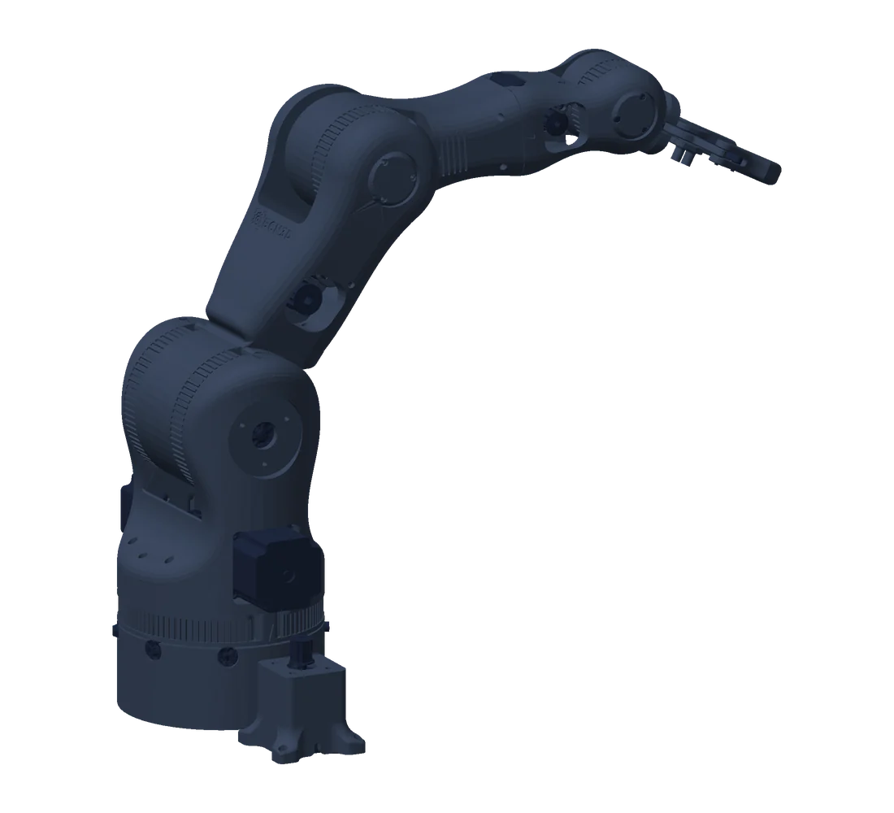
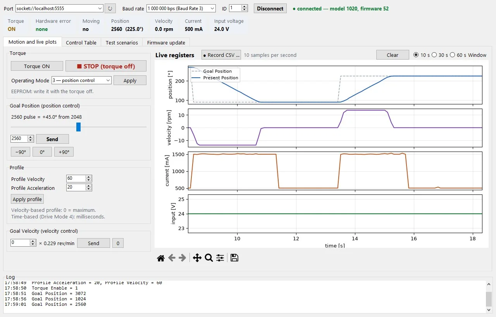

One robot arm.
Every layer engineered end to end.
The robot’s software expects expensive proprietary servos. We are building a controller that speaks their language, so low-cost motors and a 3D-printed arm can run the same software unchanged. In simulation, it already does.

Seven layers. Each one is a service you can hire.
Most suppliers own one layer and hand you the integration problem. We work through the whole stack, so the parts fit the first time.
Mechanics
We start from proven, low-cost hardware instead of locking you into one vendor’s expensive parts.
BCN3D Moveo (MIT licence). The robot description is generated straight from its CAD files, so the 3D model, the simulation and the real arm share one source.
- BCN3D Moveo
- STEP → URDF
- MIT
Electronics
The first power-on of a new board is where schedules slip. We take the board from first boot to a working system.
Microchip SmartFusion2 SoC FPGA with six TMC5160 stepper drivers.
- SmartFusion2
- TMC5160 × 6
- Bring-up
FPGA & drivers
Time-critical work moves into hardware, so motion stays smooth even when the processor is busy.
Step generation and driver interfaces in the FPGA fabric (Libero design), with low-level drivers for the processor side.
- Libero
- FPGA
- Device drivers
Operating system
A maintained, secure operating system instead of home-grown code that only one person understands.
Zephyr RTOS ported to SmartFusion2, with a reproducible workspace and builds.
- Zephyr
- SmartFusion2 port
- Reproducible builds
Servo emulation
Your existing software keeps working while the expensive hardware underneath is replaced. No rewrite, no lock-in.
The controller presents each stepper as a DYNAMIXEL device over Protocol 2.0, with an X430 Control Table emulator built on the DXL2-C library.
- DXL2-C
- DYNAMIXEL Protocol 2.0
- X430 Control Table
Integration
Proof that the whole system works together, testable on any laptop before the hardware even exists.
Robot PC with ROS 2 Jazzy in Docker and the unchanged ROBOTIS OpenMANIPULATOR-X stack; the Operator PC plans motion in MoveIt 2.
- ROS 2 Jazzy
- ros2_control
- MoveIt 2
- Docker
Quality & security
Security and code quality designed in from the start, so audits and EU Cyber Resilience Act conformity are not a last-minute patch.
MISRA C:2012 gate in CI, 100 % line and branch coverage, cross-checks against an independent Python twin.
- MISRA C:2012
- CI/CD
- CRA
Follow one command, from click to motion.
Every step is one of the layers above. Pick a layer and its step lights up.
- 01PlanMoveIt 2 plans a smooth path
- 02ControlROS 2 sends joint goals
- 03TranslateGoals become DYNAMIXEL packets
- 04DecideZephyr checks and schedules
- 05TimeThe FPGA generates exact steps
- 06MoveDrivers turn the motor
Running today, in simulation
Runs in simulation


Screenshots from the Operator PC documentation: MoveIt 2 and RViz2 on the robot description generated from the BCN3D Moveo CAD. See the full walkthrough ↗
The same arm, three ways to wire it.
Choosing the architecture decides cost, wiring and how failures behave — long before code is written. Switch an option and watch the wiring on the arm change.

One central controller
One SmartFusion2 board drives all six motors directly. Simple and inexpensive for a single arm, but every joint needs its own cable back to the controller.
Built onSmart joints on one shared bus
Each joint gets its own small controller (Doppelstep) and they share one cable, talking DYNAMIXEL Protocol 2.0 or Baton-C. Fewer wires, and a faulty joint can be swapped on its own.
Built onSmart joints on CAN
The industrial and automotive standard. Joints report diagnostics and receive firmware updates over the bus using ISO-TP (ISOTP-C).
Built on| Decision factor | A · Central | B · RS-485 | C · CAN |
|---|---|---|---|
| Cables to the joints | One bundle per joint | One shared cable | One shared cable |
| If one joint fails | Whole controller affected | That joint fails on its own | That joint fails on its own and reports why |
| Adding a joint | New driver channel on the board | Plug in another module | Plug in, update over the bus |
Doppelstep: a low-cost motor that behaves like a premium servo.
A small motor-control board and an ordinary stepper motor, turned into a DYNAMIXEL smart servo by our firmware. Existing robot software, SDKs and tools talk to it without a single change — the same idea as the arm, shrunk into one joint.


- Answers as a DYNAMIXEL XM430-W350 over Protocol 2.0
- Closed-loop current control with protection in the interrupt
- 91 automated tests on every build, on a simulated motor
- Signed firmware (MCUboot), updates over the bus
- Documentation website and PDF manual
Every layer is backed by code you can audit.
Arm renders and robot description from the BCN3D Moveo CAD (MIT licence). ROBOTIS, DYNAMIXEL and OpenMANIPULATOR are trademarks of ROBOTIS Co., Ltd.; SmartFusion2 is a trademark of Microchip Technology Inc. SmartManipulator-X is not affiliated with or endorsed by them.
Your product has layers too.
Tell us which ones keep you up at night. We start with a short call or a fixed-scope review of your current firmware.